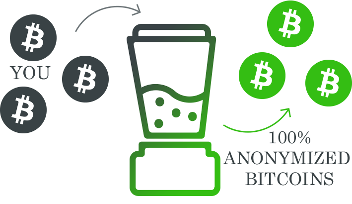

Welcome to Bitcoin Mixer
What is Bitcoin Mixing Service?
The way bitcoin transactions work causes them to be chained together in a permanent public record. They are traceable along the blockchain from one bitcoin address to another.
Bitcoin mixer severs the links between your old address and a new address by sending coins from you to other people and coins from them to you. It also randomizes transaction amounts and adds time delays to the transactions.
Generally there is no link between the original transactions and the final address of the coins. This process protects your privacy and prevents other people tracing your payments on the internet.
What Do We Offer?
- Anonymous Bitcoin Mixer: Our bitcoin mixing service does not require any account or personal information and doesn't collect any information about visitor's activity.
- Transparent Policy: We have large amount of pre-mixed bitcoins prepared for you. You can verify that your bitcoins have been properly anonymized via checking output address in a block explorer such as Blockr.io.
- Intuitive Interface: Our bitcoin mixing service is designed to be as intuitive as possible. The whole process of bitcoins anonymization should not take more than few minutes.
91.00037951 BTC
Total Mixed Bitcoins: Weekly Stats
750
Total Participants:
192019 minutes
Total Time of Mixing: